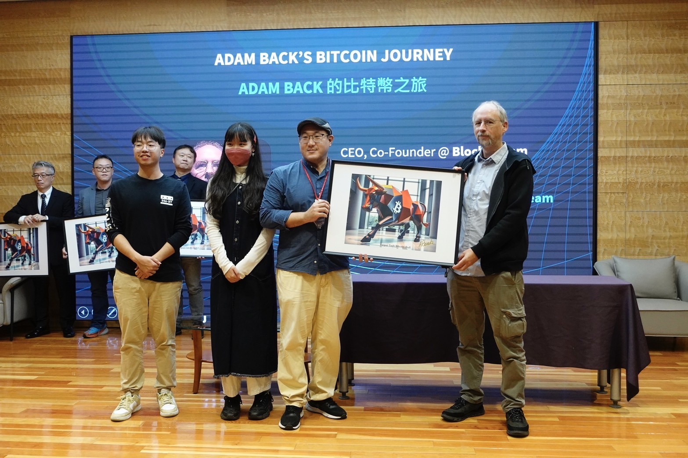

聯絡方式
- 0905630341
- jeremy641@gmail.com
- 桃園市中壢區/新竹縣竹北市
- 戴彥綸
專業技能
程式語言
- Python
- C#
- Java
- Scratch
- Micro:bit
- 網頁設計 (HTML/CSS/JavaScript)
AI建模與應用
- Regression
- Diffusion Model
- Transformer
- Unity ML-Agent
- 生成式AI (Suno、Stable Diffusion)
- LLM Prompt Engineering
音樂製作能力
- 混音
- 編曲
- 母帶後製
- MIDI參數處理
- SoundFont 設計
- IC 音訊訊號處理
教學法
- 專案導向學習 (PBL)
- 翻轉教室
- 小班制差異化教學
- 即時測驗 (Kahoot/Quizizz)
學歷與專業背景
國立臺北科技大學
互動設計系研究所碩士班 (2023 – 2025，預計 2025/08 畢)
- 研究 AI 虛擬學伴在資訊課程之應用
中原大學
資訊管理學士 & 數位音樂學程畢業 (2018 – 2023)
- 奠定資訊與音樂雙主修基礎
Nuvoton 新唐科技
IC 音訊設計工程師 (2024- )
- 提供最前沿聲音處理實戰案例，強化教學內容產業連結
獎項與成就
- 研討會論文：ICE ICETA 2024 (AI輔助學習、AI運動賦能)
- 得獎紀錄：創業相關、程式開發相關
- 音樂創作相關：提示工程相關
- 教學能力：科技教育 (國小、大學、社會教育)
個人簡介
我是一名具備五年以上資訊與創意科技教學經驗的資訊教育講師。專精於程式設計 (Python, C#, Java, Scratch, Micro:bit)、互動媒體與遊戲開發 (Unity, Web Design)、以及前瞻的 AI 與數位藝術應用 (生成式AI, LLM Prompt Engineering)。我致力於透過專案導向學習 (PBL) 和翻轉教室等創新教學法，引導學生從「動手做」中理解原理，並將所學整合應用於實際專案。同時，我具備IC音訊設計工程師背景與音樂製作能力，能將業界實務經驗融入課程，提供學生跨領域的學習視野。目前將畢業於國立臺北科技大學互動設計碩士學位，持續探索AI在教育領域的應用。
核心教學專長
- 程式設計：C#、Python、Java、Scratch、Micro:bit；強調「動手做 → 原理說 → 專案整合」三段式引導。
- 互動媒體 & 遊戲開發：Unity 2D/3D、Web Design、p5.js；擅長將物理、聲音感測與 AI 邏輯結合，創造沉浸式體驗。
- AI 與數位藝術：生成式 AI (Suno、Stable Diffusion、Gen-AI Music)、AI 聊天代理 (SillyTavern)、LLM Prompt Engineering。
- 數位音樂與聲學：SoundFont 設計、MIDI 編曲、IC 音訊訊號處理；能從音色合成到互動裝置。
- 教學法：以 PBL、翻轉教室 搭配 小班制差異化 策略，並使用即時測驗 (Kahoot/Quizizz) 與 LMS 追蹤學習歷程，提升課堂互動與成效。
教學與授課經歷
核果資訊學苑 Nuts Institute (2020 – 2022) (2025 – 現在)
職務: 講師暨講師培訓講師
主要課程與成果: 教授 Scratch、Micro:bit、網頁設計、Unity 2D/3D 及數位音樂製作等課程，並協助培訓新進講師。
校園社團講師 (2020 – 現在)
- 桃園市立大勇國小 (2023-現在): 科技藝術社團講師，教授 Scratch、Micro:bit、Web/Unity/Roblox 遊戲開發、數位音樂與 AI 跨域課程。
- 桃園市立建國國小 (2020-2023): 音樂與遊戲創作社團講師，教授 Scratch、Micro:bit、Web/Unity 遊戲開發、數位音樂與 AI 跨域課程。
AI音樂研習營 講師 (2023-2024)
- 應 泰宇出版社 邀約，講授AI音樂作曲之研習教學課程。
- 授課地點：已於 台中曉明女中、宜蘭國華國中、宜蘭羅東高中、淡水淡江高中 進行授課。
大專院校與公部門研習 (2023 – 2024)
- 北科大互動設計系「程式小助理課程系列 01：SillyTavern AI 虛擬人建置」直播: 示範本地 LLM、角色指令工程與前端串接，並深入探討 AI 虛擬人建置。
- 桃園市科技美學教師精進與實踐計畫: 舉辦「元宇宙教育落地深耕：數位藝術 APP」工作坊，內容涵蓋 AR/VR、OpenBrush、Sketchfab，以及「AI 輔助生成式藝術創作入門 Day 3」工作坊，聚焦 Stable Diffusion、Canva AI、AI Agent 本地端LLM助理製作。
AI實驗室研究經歷
北科大AI實驗室 (指導教授：傅子恒教授)
主要研究領域：
- Diffusion Model
- NLP/Foundation Model Fine-tune
- Unity ML-Agent (Reinforcement learning)
- AI輔助教學
- AI運動賦能
主要貢獻：
- LLM/Foundation Model Fine-tune：資料收集與製作「虛擬學長姐」fine-tune GPT3.5模型 (LLama Factory)
- Unity ML-Agent：專案助教，教學大學部課程
- AI輔助教學：製作整合「AI虛擬學伴」平台，資料收集、清洗、提示工程、進行實驗與分析
- AI運動賦能：開發Unity平台串接GPT 3.5 turbo API、資料收集、清洗、提示工程、進行實驗與分析
研究/專案成果
「虛擬學長姐」fine-tune GPT3.5模型
願景：建立一個隨時隨地可互動的「虛擬學長姐」，專為學弟妹提供即時建議與支持。
功能特色：
- 即時回應：基於課程需求與學科特性，快速生成實用建議
- 個性化指導：透過機器學習分析學弟妹的背景與需求
- 學業支持：作業解答、學習資源推薦
- 生涯規劃：針對未來進修與職涯發展提供建議
AI運動賦能 (啞鈴抬舉運動)


研究目標：透過結合AI虛擬教練與遊戲化互動，提升啞鈴抬舉等重複運動的趣味性與參與度。
系統設計：
- 使用Stable Diffusion自訂教練形象
- GPT-3.5生成詳細的教練設定，結合ElevenLab的TTS提供即時語音激勵
- 以Unity開發的互動式"乒乓球"遊戲為基礎
- 啞鈴內建陀螺儀傳感器，透過舉啞鈴動作控制遊戲進程
發表：ICE ICETA 2024 "Enhancing Exercise Engagement through Virtual Training and Game-Based Animation"
AI虛擬學伴平台 (利用SillyTavern、GPT4)
研究背景：針對互動設計系大學二年級程式教育中，學習動機不足、學生個別差異大的挑戰。
研究成果：
- 學生平均考試成績提升至83.37分，標準差僅15.743
- IMI（內在動機問卷）顯示，學生成就感、實用性評價顯著高於中位數
- AI助學效果佳，有效降低學習者認知負荷
發表：ICE ICETA 2024 "AI-Assisted Design Education - Boosting Rapid Prototyping Skills in Design Students"
利用迴歸模型預測房屋出租速度(XGBoost)


專案概述：聚焦於捷運周邊租屋市場，分析影響出租速度的關鍵因素及趨勢。
技術應用：
- 利用爬蟲技術收集台灣民間租屋資料
- 結合QGIS和XGBoost回歸模型進行分析
- 採用對數轉換技術處理數據偏態
- 發現「押金月數」等特徵對出租速度有顯著影響
線上教學資源
- 桃園市立建國國小 110-1年度 科技藝術 - 程式設計社 RPG MAKER 展示影片: RPG MAKER成果展，利用RPG MAKER製作屬於自己的2D關卡像素遊戲。
- AI愛創作 AI EXPO: 參加2024教育科技展 - Persona盛源的教案說明與展示影片。
- Do your think, do your dream! RPG遊戲創作營隊的招生影片: RPG遊戲創作營隊的招生影片。
- 中華電信 元宇宙營隊企業研習講師 - 製作虛擬全息投影裝置(pepper's ghost) 範例影片: 製作虛擬全息投影裝置(pepper's ghost) 範例影片。
- C# 程式入門教學系列 (共 4 集，YouTube): 觀念講解 + Live Coding，以專案驅動方式示範 .NET 開發流程。
- 程式小助理課程 01 – SillyTavern AI (北科大互動設計 AI Lab): Prompt 設計、API 佈署到聊天室機器人，並探討虛擬人應用。
- 元宇宙教育｜數位藝術 APP (桃園市科技美學教師研習): AR/VR、OpenBrush、Sketchfab，以及Spatial元宇宙空間。
- AI 輔助生成式藝術創作 Day3 (桃園市科技美學教師研習): 教導教師使用iPad實作p5.js，Stable Diffusion + 本地端LLM 實作。
著作
AI音樂夢工廠:AI帶你輕鬆玩音樂 (2024)。新北市：泰宇出版社。

教學現場照片